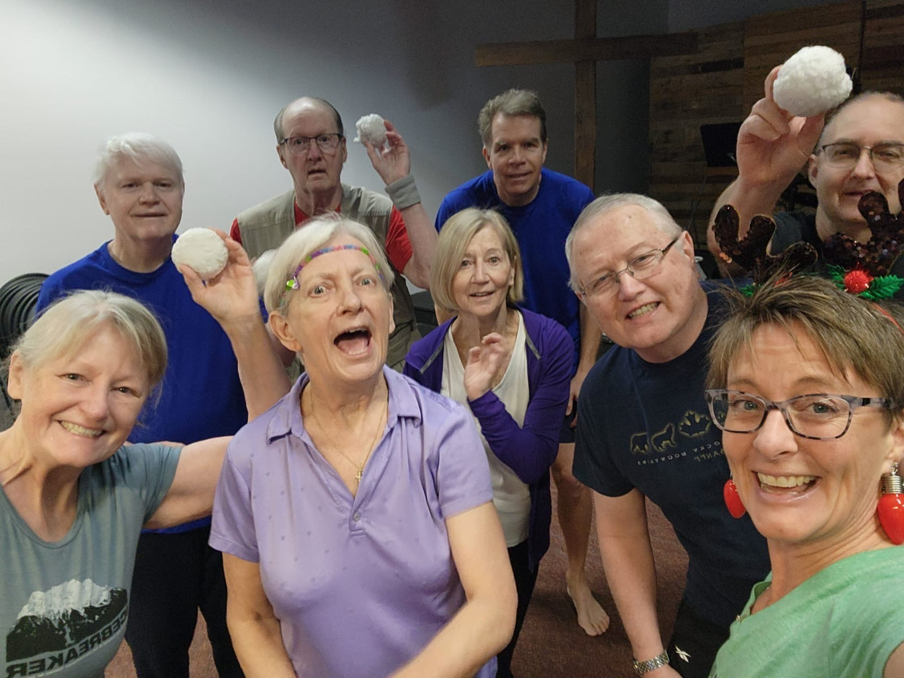

Home · Module 6 · Motivation & Mental StrengthModule 6 · Motivation et force mentale
Module 6 · Motivation & Mental StrengthModule 6 · Motivation et force mentaleMotivation & Hope: Your Why MattersMotivation et espoir : votre pourquoi compte
Living with Parkinson’s isn’t easy. Some days feel harder than others, and motivation may come and go. But here’s the truth: you are stronger than you think, and every single step you take matters.
What you’ll learn
- Why motivation is the spark that gets you moving.
- How to find your personal WHY — and keep it in front of you.
- Why hope is a decision, not wishful thinking.
- Four simple ways to keep your motivation alive.

Why motivation matters
Motivation is the spark that gets you moving. Discipline and community keep you going — but without that spark, it’s hard to even start. The challenge with Parkinson’s is that symptoms, energy levels, or mood changes can make it feel like motivation disappears overnight.
That’s where having a clear WHY becomes so important.
Finding your WHY
Ask yourself: Why am I fighting back today?
- To play with my grandchildren?
- To keep travelling?
- To maintain independence at home?
- To keep doing the hobbies I love?
Your “why” is what will carry you forward when you don’t feel like exercising or showing up. Write it down. Keep it somewhere visible. Say it out loud before class.
The power of hope
Research proves that exercise can slow progression, reduce symptoms, and improve quality of life. But beyond the science, hope itself is powerful. When you believe your actions matter, you start to notice wins: standing taller, walking farther, laughing more, feeling connected.
Hope is not wishful thinking — it’s a decision to keep moving toward a better tomorrow.
How to keep motivation alive
Start small
Consistency beats intensity in the beginning.
Celebrate progress
Even small wins are victories.
Lean on your community
Motivation multiplies when you’re surrounded by others walking the same path.
Remind yourself daily
Exercise is medicine. Movement is my therapy. I am worth this effort.
Next step
Surround yourself with people who lift you up. A community of fighters like you will help you stay motivated, hopeful, and consistent — because we rise stronger together.
Your action this week
Activity: Write down your personal WHY. Keep it where you can see it. TRUST me, this works!
Homework: Say your WHY out loud before each exercise session.
Key takeaways
- Motivation is the spark; discipline and community keep you going.
- A clear WHY carries you forward on the days you don’t feel like showing up.
- Hope is a decision to keep moving toward a better tomorrow.
- Start small, celebrate progress, lean on your community, and remind yourself daily.
Quick check
Try these four questions to see what stuck with you.
Vivre avec la maladie de Parkinson n’est pas facile. Certains jours sont plus difficiles que d’autres, et la motivation peut aller et venir. Mais voici la vérité : vous êtes plus fort(e) que vous le pensez, et chaque pas que vous faites compte.
Ce que vous apprendrez
- Pourquoi la motivation est l’étincelle qui vous met en mouvement.
- Comment trouver votre POURQUOI personnel — et le garder sous les yeux.
- Pourquoi l’espoir est une décision, et non un vœu pieux.
- Quatre façons simples de garder votre motivation bien vivante.
Pourquoi la motivation est importante
La motivation est l’étincelle qui vous met en mouvement. La discipline et la communauté vous permettent de continuer — mais sans cette étincelle, il est difficile même de commencer. Le défi avec la maladie de Parkinson, c’est que les symptômes, le niveau d’énergie ou les changements d’humeur peuvent donner l’impression que la motivation disparaît du jour au lendemain.
C’est là qu’avoir un POURQUOI clair devient si important.
Trouver votre POURQUOI
Demandez-vous : Pourquoi est-ce que je me bats aujourd’hui?
- Pour jouer avec mes petits-enfants?
- Pour continuer à voyager?
- Pour garder mon autonomie à la maison?
- Pour continuer à pratiquer les passe-temps que j’aime?
Votre « pourquoi », c’est ce qui vous fera avancer quand vous n’aurez pas envie de faire de l’exercice ou de vous présenter. Écrivez-le. Gardez-le bien en vue. Dites-le à voix haute avant le cours.
La force de l’espoir
La recherche démontre que l’exercice peut ralentir la progression, réduire les symptômes et améliorer la qualité de vie. Mais au-delà de la science, l’espoir lui-même est puissant. Quand vous croyez que vos actions comptent, vous commencez à remarquer des victoires : vous vous tenez plus droit(e), vous marchez plus loin, vous riez davantage, vous vous sentez en lien avec les autres.
L’espoir n’est pas un vœu pieux — c’est la décision de continuer d’avancer vers un meilleur lendemain.
Comment garder votre motivation bien vivante
Commencez petit
Au début, la constance l’emporte sur l’intensité.
Célébrez vos progrès
Même les petites réussites sont des victoires.
Appuyez-vous sur votre communauté
La motivation se multiplie quand vous êtes entouré(e) de personnes qui suivent le même chemin.
Rappelez-vous-le chaque jour
L’exercice est un médicament. Le mouvement est ma thérapie. Je vaux cet effort.
Prochaine étape
Entourez-vous de personnes qui vous tirent vers le haut. Une communauté de combattants comme vous vous aidera à rester motivé(e), plein(e) d’espoir et constant(e) — parce qu’ensemble, on se relève plus fort.
Votre action de la semaine
Activité : Écrivez votre POURQUOI personnel. Gardez-le là où vous pouvez le voir. FAITES-MOI CONFIANCE, ça fonctionne!
Devoir : Dites votre POURQUOI à voix haute avant chaque séance d’exercice.
Points clés à retenir
- La motivation est l’étincelle; la discipline et la communauté vous permettent de continuer.
- Un POURQUOI clair vous fait avancer les jours où vous n’avez pas envie de vous présenter.
- L’espoir est la décision de continuer d’avancer vers un meilleur lendemain.
- Commencez petit, célébrez vos progrès, appuyez-vous sur votre communauté et rappelez-vous-le chaque jour.
Petit test
Essayez ces quatre questions pour voir ce que vous avez retenu.